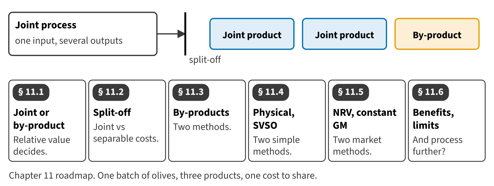

Part II · Measuring product cost · Chapter 11
Joint Products and By-Products
المنتجات المشتركة والمنتجات العرضية
When Orontes crushes a batch of olives, it gets extra-virgin oil, virgin oil and pomace from the same press. Chapter 7 took the extra-virgin oil into bottling at $8.06 a liter. This chapter shows where that figure came from, and why other answers were possible.

Start here
Then
What this chapter is tested on
| LOS | Official statement (ICMA, 2024) | In plain words | Depth here |
|---|---|---|---|
| D.1.j | determine the appropriate use of joint product and by-product costing | Determine when to use joint product and by-product costing. | Full treatment |
| D.1.k | demonstrate an understanding of concepts such as split-off point and separable costs | Demonstrate an understanding of the split-off point and separable costs. | Full treatment |
| D.1.l | determine the allocation of joint product and by-product costs using the physical measure method, the sales value at split-off method, constant gross profit (gross margin) method, and the net realizable value method, and describe the benefits and limitations of each method | Allocate joint costs with the physical measure, sales value at split-off, constant gross margin and NRV methods, and describe the benefits and limitations of each. | Full treatment + Extended Example |
The official statements are quoted from the ICMA Learning Outcome Statements (effective September 1, 2024). The plain-words column restates them in simpler English. The exam may test any outcome up to Level C.
What you already know
Chapter 7 followed batch H-2711 through crushing and bottling. Chapter 10 allocated service costs that no one department caused alone. Joint costs raise the same question for products.
The 8 key terms
Every scene has Check Answers and Try Again. Try Again reshuffles rather than revealing. When you are wrong, the first thing you read is the reason for the option you chose, taken from the book's own explanations. Progress is saved in this browser.